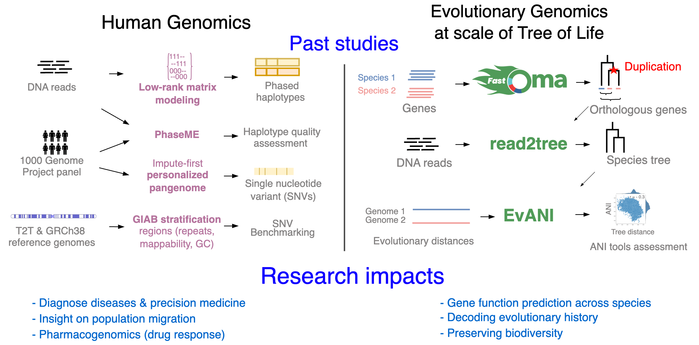

|
Dr. Sina Majidian's Research Studies
Pangenomes are now redefining our understanding of genetic variations across populations and genome evolution across species. A single reference genome cannot fully represent human genetic diversity, even when it is complete enough to be considered “Telomere-to-Telomere”. To fully harness the power of pangenomes in biomedicine, there is a pressing need for efficient methods to store, visualize, and extract relevant information. My research program aims to understand human genome variation and evolution across different genomic regions by developing interpretable and efficient methods in comparative pan-genomics, leveraging machine learning methods and statistical analysis.

Comparative genomics
Orthology and phylogeny inference at scale, along with their applications, are my main research interests. I have developed methods and written software in the field of comparative genomics, aiming to enable evolutionary analysis at the scale of the Tree of Life. I contributed to the development of Read2Tree, a fast and accurate method for inferring phylogenies from sequencing reads. I am also the first author of FastOMA, a tool for accurately identifying orthologous genes by distinguishing them from paralogs. This tool makes a significant impact in orthology prediction and addresses the challenges of growing large-scale genomic data. Orthology information can also be leveraged to align single-cell data across different species.
- S. Majidian, Y. Nevers, A. Yazdizadeh, A. Vesztrocy, S. Pascarelli, D. Moi, N. Glover, A. Altenhoff, C. Dessimoz. Orthology inference at scale with FastOMA.
Nature Methods, 2024.
code, YouTube Talk.,
- D. Dylus , A. Altenhoff , S. Majidian , F. Sedlazeck, C. Dessimoz, Inference of phylogenetic trees directly from raw sequencing reads using Read2Tree.
Nature Biotechnology,
2024.
code.
- A. Nicheperovich, A. Altenhoff, C. Dessimoz, S. Majidian*, OMAMO: orthology-based alternative model organism selection.
Bioinformatics,
2022,
code,
web service.
- D A. Yazdizadeh, A. Altenhoff, N. Romashchenko, C. Dessimoz, S. Majidian*, OrthoXML-tools: a toolkit for manipulating OrthoXML files for orthology data.
code.

Genomic variant benchmark and personalized human pangenome
Genomic variant benchmark datasets are crucial for assessing the performance of sequencing technologies and analytical methods; however, their development involves multiple sequencing technologies, different variant calling tools, and laborious manual curation. In one study, I reviewed available benchmark datasets and their utility, with a focus on genes of medical relevance. In another study, in collaboration with the Genome in a Bottle team, I co-led an effort to develop a genomic resource by defining various challenging genomic contexts used to investigate the strengths and weaknesses of variant callers, which was published in Nature Communications.
- N. Dwarshuis, N. Kalra, ..., J. Wagner, S. Majidian*, J. Zook*, The GIAB genomic stratifications resource for human reference genomes. Nature Communications, 2024.
- S. Majidian, D. Paiva Agustinho, F. Sedlazeck, M. Mahmoud, Genomic variant benchmark: if you cannot measure it, you cannot improve it.
Genome Biology, 2023.
- K. Vaddadi, M. Lin, S. Majidian, T. Mun, B. Langmead.
Minimizing reference bias with an imputed personalized reference preprint 2025.
- F. Palizban, S. Majidian*
cfCNV: an optimized pipeline for detecting copy number variations for cell free DNA data. European Journal of Human Genetics, 57th ESHG European Society of Human Genetics. 2025.

Haplotype assembly
Haplotype assembly was the main focus of my PhD, leading to five first-author and two second-author publications. I have developed software for estimating haplotype blocks from single nucleotide variants (SNVs) called from DNA sequencing reads. In one project, I benefited from low-rank matrix recovery in haplotype estimation and applied it to human sequencing data. In another project, I studied hexaploid sweet potato (Ipomoea batatas) using a 10X Genomics linked-read dataset, which resulted in long and accurate haplotypes. A longstanding problem in the field was understanding the limitations of the Minimum Error Correction (MEC) approach in haplotype assembly, for which I developed a solid framework.
- S. Majidian, F. Sedlazeck, PhaseME: Automatic rapid assessment of phasing quality and phasing improvement.
GigaScience,2020, code.
- S. Majidian, M. Kahaei, D. de Ridder, Hap10: reconstructing accurate and long polyploid haplotypes using linked reads.
BMC Bioinformatics, 2020,
code.
- S. Majidian, M. Kahaei, D. de Ridder, Minimum error correction-based haplotype assembly: considerations for long read data.
PLOS one, 2020, code.
- M. Mohades, S. Majidian, M. Kahaei, Haplotype assembly using manifold optimization and error correction mechanism.
IEEE Signal Processing Letters, 2019.

Bacterial pangenome and metagenomics classification
Metagenomics is the study of genetic material recovered directly from specific environments, such as the gut microbiota or soil. High-throughput DNA sequencing technologies revolutionized the field by enabling large-scale metagenomic studies. Initially, these technologies produced short reads of 100-250 nucleotides, but recent advances in long-read sequencing allow for the capture of thousands of bases with high accuracy, providing richer information for analysis. By sequencing DNA samples, we can characterize microbial biodiversity and determine which bacterial strains or species are present, a task known as metagenomic classification.
- S. Majidian, B. Langmead. MetaKpick: machine learning–based metagenomic classification with multi k-mer-based pangenome indexes, 2024.
- S. Tan, S. Majidian, B. Langmead, M. Zakeri.
Movi Color: fast and accurate long-read classification with the move structure ACM-BCB, 2025.
Supervision and mentorship
Graduate students
- Fahimeh Palizban. Inferring copy number variation with cell-free DNA data, University of Lausanne, 2024. (Currently at Children's Hospital of Philadelphia)
- Arun Maurya. Reconstructing cancer phylogenies with Spatial Transcriptomics, University of Lausanne, 2023. (Currently Research Engineer at Institut Pasteur)
- Sara Lamei. Analysing biosynthetic pathway of terpenoids in fenugreek using RNA-seq data. Tarbiat Modares University, 2022. (Currently at Saarland University)
- Rajarshi Mondal. T2T gene annotations of the Major Histocompatibility Complex. Pondicherry University, 2022.
- Samuel Moix. Detecting whole genome duplication using hierarchical orthologous groups, University of Lausanne, 2021. (Now PhD student at the University of Lausanne, Switzerland.)
- Mathijs van Kooten. Creating an ensemble method combining haplotype estimates. Wageningen university, 2019.
Summer interns
- Ali Yazdizadeh. Importance of phylogenetic rooting for orthology inference, 2022. (Incoming PhD student at Carnegie Mellon University, USA.)
- Borbala Banfalvi, Natural Language Question Answering over Knowledge Graphs, 2022. (Currently PhD student at Queen Mary University London).
- Claire Wang, Natural Language Question Answering over Knowledge Graphs, 2022. (Currently PhD student at University of Cambridge).
- Alina Nicheperovich. Orthology guided model organism selection, 2021. (Now DPhil Candidate at the University of Oxford, UK.)
|